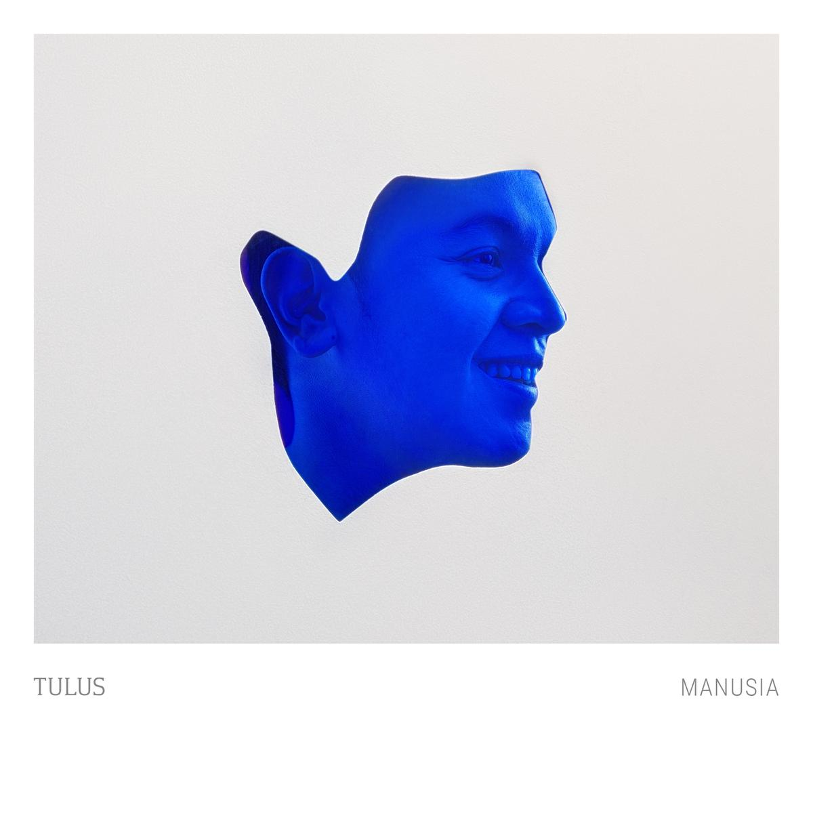
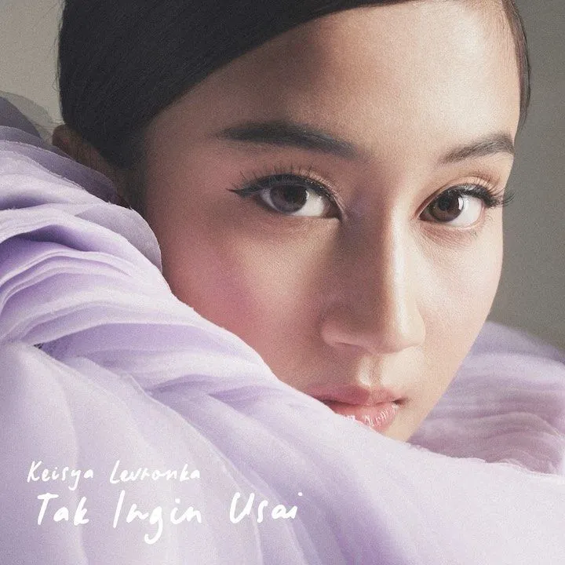

Terpopuler 2022
 
Hati Hati di Jalan
Tak Ingin Usai
"Tak Ingin Usai" merupakan singel keempat Keisya yang dirilis di bawah naungan Universal Music Indonesia. Keisya menggandeng Mario Gerardus Klau sebagai pencipta lagu dan Tohpati sebagai produser.
Dalam proses produksi lagu ini tidak memakan waktu lama, mulai dari pemilihan lagu hingga proses perekaman semuanya berjalan cukup cepat. Keisya mengaku menyanyikan lagu ini menjadi tantangan tersendiri baginya karena ada satu bagian nada tinggi yang dirasa sulit untuk dicapai.
Lagu ini berdurasi empat menit tiga puluh delapan detik. Secara musikal, "Tak Ingin Usai" adalah pop dan balada. Lagu ini bercerita tentang hubungan percintaan yang memang tidak bisa dipaksakan, sehingga harus usai, walaupun hal itu berat untuk dilakukan.
Bertaut
Lirik "Bertaut" mengisahkan tentang ikatan seorang ibu dan anak. Penyanyinya, Nadin Amizah, baru saja merilis video musik lagu ini yang merupakan bagian dari album Selamat Ulang Tahun.
"'Bertaut' telah menjadi salah satu lagu favorit pendengar. Bercerita tentang ikatan ibu dan anak, dirangkai dalam bahasa yang tajam dan indah," kata Nadin, sebagaimana dikutip Antara News.
Anything You Want
Grup band indie-rock, Reality Club, baru-baru ini merilis sebuah lagu barunya yang berjudul Anything You Want. Lagu ini merupakan salah satu lagu yang cukup sering ditampilkan di The Teaser Tour.
Dalam siaran tertulisnya, Reality Club bercerita lagu yang ditulis Fathia Izzati ini adalah sebuah puisi yang diubah menjadi lagu cinta. Cerita cinta yang baru saja dimulai, tapi sudah menyimpan begitu banyak janji, lonjakan emosi, dan juga harapan.
Anything You Want mengacu pada lagu Arctic Monkeys berjudul Cornerstone yang memainkan peran besar dalam kisah cinta dan lagu itu sendiri.